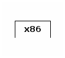
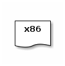
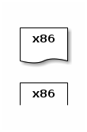
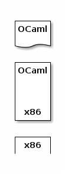
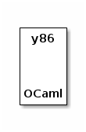

Sprachen, Meta-Sprachen und Programm-Verarbeiter¶
In diesem Kapitel geht es darum, wie die Magie eines vorigen Kapitels funktioniert.
Jede hinreichend fortschrittliche Technologieist von Magie nicht zu unterscheiden.
Programmiersprachen, Programme und Daten¶
Wie bereits besrpochen,
- eine Pgrorammiersprache ist eine Notation um Berechnungen zu beschreiben;
- ein Programm ist etwas, was nach den Regeln dieser Notation geschrieben ist; es kann ausgeführt werden um eine Berechnung durchzuführen;
- eine Berechnung ist eine Verarbeitung von Daten; und
- Daten sind Repräsentationen von Informationen.
Eine natürliche Sprache (Dänisch zum Beispiel) ist eine Ansammlung von Buchstaben, die zu Wörtern und dann zu Sätzen zusammengesetzt werden. Wörter bestehen aus Buchstaben und Sätze bestehen aus Wörtern und Satzzeichen. Es gibt einen Konsens darüber, was ein richtiges Wort ist (Rechtschreibung) und was ein richtiger Satz ist (Grammatik). Rechtschreibung und Grammatik zusammen bilden die Syntax der dänischen Sprache.
Wenn man ein Wort falsch schreibt, oder einen Satz falsch konstruiert, wird man falsch oder gar nicht verstanden. Klare und verständliche Sätze übermitteln Informationen.
In Natürlichen Sprachen gibt es darüber hinaus noch die Möglichkeit mehrdeutig zu sein; das Problem haben Programmiersprachen nicht.
Wir haben auch bereits gesehen, dass Kochrezepte in einer natürlichen Sprache geschrieben sind und Beispiele für Programme sind.
Das Konzept von Meta-Sprachen¶
In Schulen hier in Deutschland lernen alle Schüler früher oder später Englisch. Normalerweise wird Englisch mit einem Arbeitsbuch gelernt. Dieses Arbeitsbuch ist (anfangs) wahrscheinlich auf Deutsch geschrieben und schwierige Fragen beantwortet der Lehrer auch auf Deutsch. Für einen solchen Englisch-Schüler ist deutsch die Meta-Sprache von Englisch; also die Sprache auf der man über eine andere Sprache spricht.
Außer Englisch lernen die Schüler aber auch Deutsch in der Schule. Die deutschen Arbeitsbücher sind auch auf Deutsch geschrieben und lehren Rechtschreibung und Grammatik. Im Deutschunterricht ist also Deutsch die Meta-Sprache für Deutsch: Lehrer und Schüler reden über Deutsch auf Deutsch.
Programme und die Sprachen, in denen sie geschrieben sind¶
Kurz gesagt: Ein Programm, das in beispielsweise OCaml geschrieben ist, nennen wir ein „OCaml-Programm“.
Interpreter¶
Interpreter sind die Simultandolmetscher der Informatik.
Um genauer zu sein: Ein Interpreter ist ein Programm, das ein anderes Programm ausführt. Damit ist es außerdem ein Programm-Verarbeiter (program processor).
Übung 8¶
Überlege dir kurz wie Aristoteles vier Ursachen für einen Interpreter aussehen. Also:
- wofür wird ein Interpreter benutzt?
- was für Daten verarbeitet ein Interpreter?
- was für Operationen (Berechnungen) führt der Interpreter mit diesen Daten durch?
- welche Methoden benutzt der Interpreter für diese Operationen?
Der Sinn dieser Aufgabe ist, dass du ein besseres Verständnis dafür bekommst, was ein Interpreter ist.
I-Diagramme und gestapelte Interpreter¶
Ein Interpreter ist in einer Meta-Sprache geschrieben (also in einer Implementationssprache). Wir können Interpreter als I-Diagramme darstellen.
- QS steht für die Quellsprache (der interpretierten Programme) and
- ZS steht für die Meta-Sprache (in der der Interpreter geschrieben ist:
Kurz gesagt,
- ein Interpreter für QS-Programme ist ein „QS-Interpreter“ (also ein Interpreter für QS-Programme, der selbst in MS geschrieben und somit ein MS-Programm ist),
- ein Interpreter für QS-Programme wird auch manchmal als „ein Interpreter für QS, implementiert in MS“ bezeichnet, obwohl er eigentlich Programme verarbeitet, nicht die Sprache.
Terminologie: * Wenn ein Interpreter für Byte Code oder Assembly (Sprachen, die sich besser für Maschinen eignen als für Menschen) in der Hardware eingebaut ist, nennt er sich Mikroprozessor, * wenn er in Software geschrieben ist, nennt er sich eine Virtuelle Maschine.
(Gedankenfutter: Benutzt du auch manchmal eine Virtuelle Maschine? Vielleicht sogar in diesem Kurs?)
Wir werden im Folgenden Mikroprozessoren (hier im Beispiel für Programme in der Sprache x86) wie folgt darstellen:
und Programme (hier im Beispiel in x86 geschrieben) wie folgt:
Die Ausfürhung dieses Programmes mit dem obigen Mikroprozessor zeigen wir so:
Der x86-Mikroprozessor führt das x86-Programm aus. Bemerke dabei, dass sowohl die Sprache des Mikroprozessors als auch die des Programms x86 ist. Wenn wir versuchen würden, dem Mikroprozessor ein OCaml-Programm zu verfüttern, käme dabei nichts weiter heraus als ein verwirrter Mikroprozessor und ein frustrierter Programmierer.
Wenn wir ein Programm ausführen wollen, was nicht in der Sprache unseres Prozessors geschrieben ist, dann brauchen wir einen Übersetzer für das Programm. Wie praktisch, dass wir gerade über Interpreter gelernt haben.
Wenn wir die folgenden drei Artefakte haben:
- einen x86 Mikroprozessor:
- einen Interpreter für OCaml-Programme, implementiert in x86:
- ein OCaml-Programm:
Dann können wir die Ausfürhung des OCaml-Programms wie folgt darstellen:
Der x86-Mikroprozessor führt den OCaml-Interpreter aus, der das OCaml-Programm ausfürht.
Bemerke wieder:
- Der Mikroprozessor für x86-Programme führt ein x86-Programm aus (den Interpreter), und
- der OCaml-Interpreter führt ein OCaml-Programm aus.
Übung 9¶
Jetzt dürft ihr selbst abstrahieren.
Stellt euch vor ihr habt:
- einen x86-Mikroprozessor
- einen x86-Interpreter, geschrieben in OCaml
- einen OCaml-Interpreter, der in x86 geschrieben ist
- einen Interpreter für PHP-Programme, der von einem OCaml-Interpreter ausgeführt werden kann
- einen Interpreter, geschrieben in PHP, der Scheme-Programme ausführt
- einen Interpreter für Rust, geschrieben in Lisp
Welche der folgenden Programme könnt ihr damit ausführen?
- ein x86-Programm
- eines, was in Scheme geschrieben ist
- eine Webanwendung in PHP
- einen Interpreter für Lisp, der in PHP geschrieben ist
- ein Programm, dass zwei Zahlen zusammenlegen kann und in OCaml implementiert ist
- ein Rust-Programm
- ein Programm, das in Lisp geschrieben ist und von eins bis unendlich zählt
(Tipp: zeichne die Diagramme auf, das macht es leichter, sich die Kette von Interpretern vorzustellen.) (Tipp 2: falls du bei sehr vielen Fragen „nein“ antwortest, denk daran: Interpreter sind auch nur Programme.)
Ein letztes Wort über Virtuelle Maschinen¶
Wenn eine Firma einen neuen Mikroprozessor in einer tollen neuen Sprache entwickelt (nennen wir sie x86), ist es sehr teuer, den Mikroprozessor für jede Korrektur neu zu bauen. Daher wird der Mikroprozessor erst einmal als Virtuelle Maschine simuliert. Zum Beispiel:
Compiler¶
Wenn Interpreter das maschinelle Pendant zu Simultandolmetschern sind, dann sind Complier das maschinelle Pendant zu Textübersetzern.
Während der Interpreter die Befehle nimmt wie sie kommen und die Interpretation direkt ausspuckt, ist das Input für einen Compiler ein Programme und der Compiler spuckt (wenn er richtig geschrieben ist) ein äquivalentes Programm in einer anderen Sprache aus.
Kompakter gesagt: Ein Compiler ist ein Programm zum Übersetzen anderer Programme von einer Sprache (Quellsprache) in eine andere (Zielsprache). Compiler erhalten die Funktionalität der Programme, die sie übersetzen. Das heißt, das Quellprogramm und das Zielprogramm führen die gleiche Funktion aus, nur die Sprache in der sie implementiert sind ist unterschiedlich.
Version¶
Erstellt [2022-10-15] Erweitert [2023-01-09]